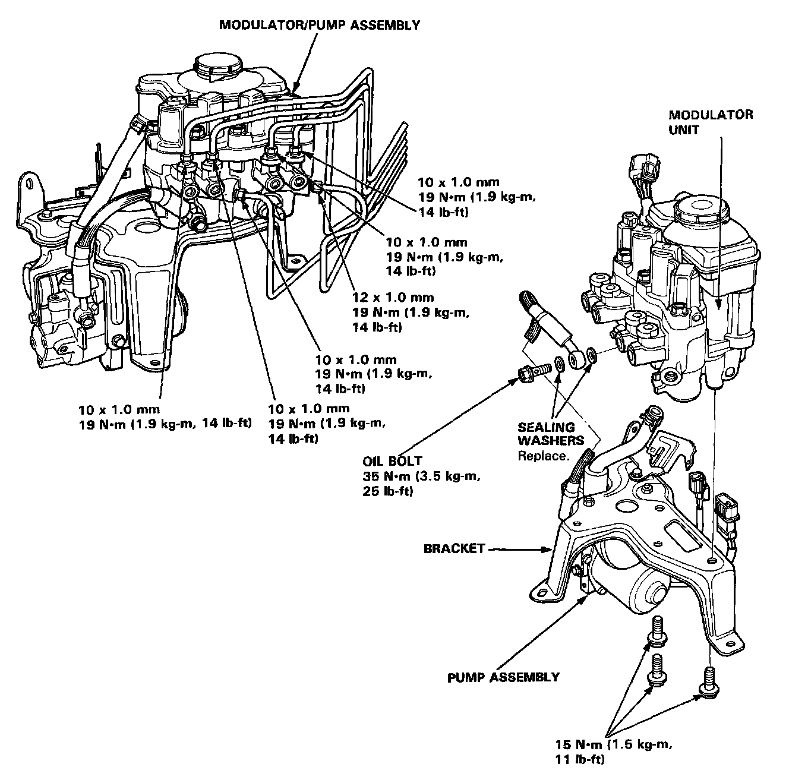
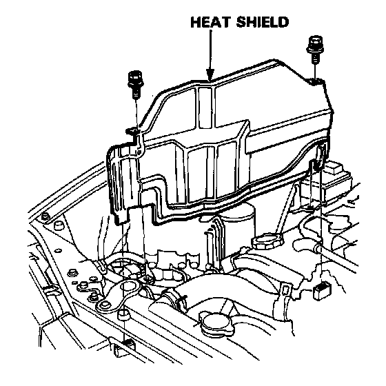
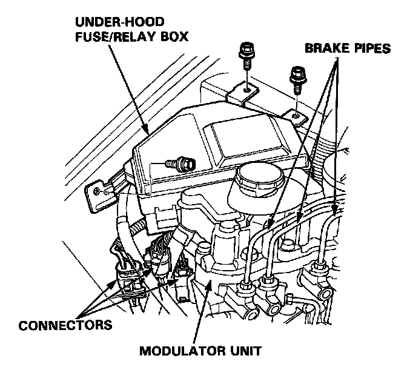
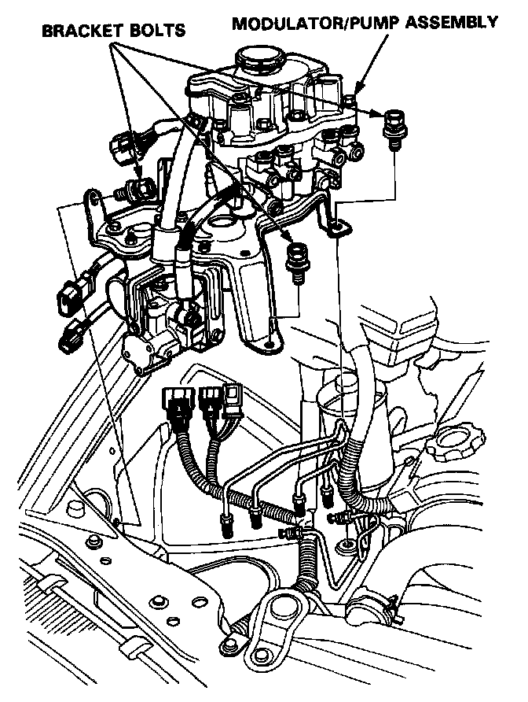

Hydraulic Control Assembly - Antilock Brakes: Service and Repair

Index/Torque
Before removing the modulator-to-pump high-pressure line, be sure to relieve the fluid pressure from the maintenance bleeder. Relieving Pressure
CAUTION:
- Do not spill brake fluid on the car; it may damage the paint; if brake fluid does contact the paint, wash it off immediately with water.
- To prevent spills, cover the hose joints with rags or shop towels.
- Before reassembling, check that all parts are free of dust and other foreign particles.
- Replace the modulator unit as an assembly if it is defective for any reason.
- Do not mix different brands of brake fluid as they may not be compatible.
- Do not reuse the drained fluid. Use only clean DOT 3 or 4 brake fluid.
- When connecting the brake pipes, make sure that there is no interference between the brake pipes and other parts.
- Be careful not to bend or damage the brake pipes when removing the modulator unit.
Replacement
1. Drain the brake fluid from the modulator unit.

2. Remove the heat shield.

3. Remove the under-hood fuse/relay box mounting bolts and disconnect the connectors from the modulator unit.
4. Disconnect the brake pipes from the modulator unit.

5. Remove the three modulator bracket bolts, then remove the modulator/pump assembly and bracket as an assembly.
6. Install the modulator/pump assembly in the reverse order of removal.
7. Fill the modulator reservoir and bleed the modulator, accumulator/line high-pressure fluid from the maintenance bleeder with the special tool. Relieving Pressure
8. Refill the modulator reservoir to the MAX level.